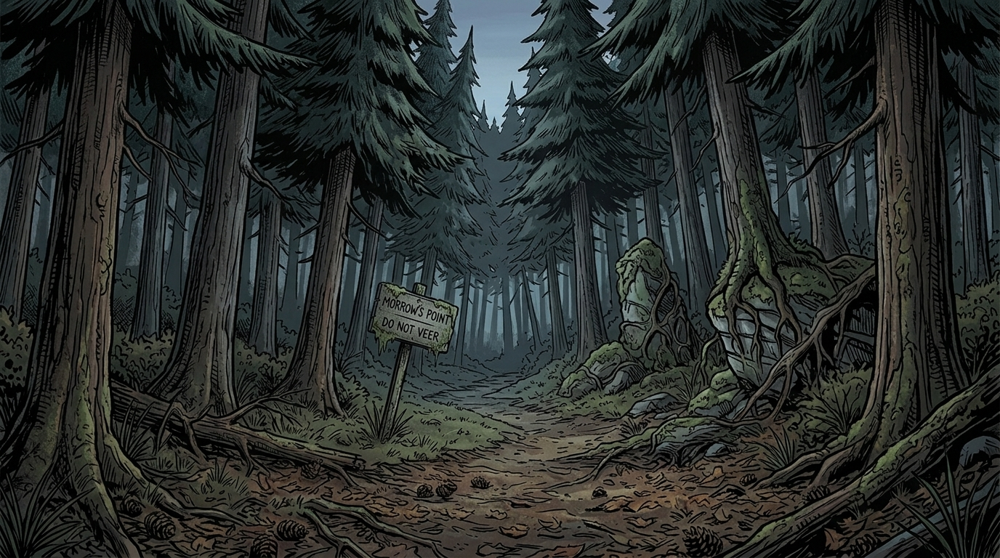

Morrow's Point



Morrow's Point fica no litoral do Maine, cercada por paredões de pinheiros e conectada ao restante do mundo por uma única estrada rachada — a Rota 9. Quando o inverno chega, a cidade parece encolher: o sinal de rádio chia, a linha telefônica cai e uma névoa fria sobe do Atlântico. A fábrica de conservas que sustentou a cidade por três gerações fechou. Os adultos sobrevivem de bico e silêncio. Quem é de fora, é visto com desconfiança. Quem nasceu aqui, raramente sai. Mas os adolescentes sabem que o que sobrou aqui logo vai acabar — e é exatamente esse vazio que cria espaço para coisas que não deveriam acontecer.
-
Ethan Carter — amigo, 17 anosQuieto e observador. Protege a irmã mais nova, Lorelei, às vezes em excesso. Guarda dinheiro numa lata "para emergências".
-
Lorelei Carter — amiga, 15 anosCuriosa, impulsiva, adora lugares proibidos. Faz listas de tudo e guarda recortes de jornal sobre eventos estranhos.
-
Danny "Retro" Diaz — dono da locadora, 24 anosCamisa floral, mullet, chiclete de canela. Especialista em filmes de terror e teorias de plot.
-
Martha Higgins — dona do Diner, 52 anosConhece o histórico de todo morador. Observa mais do que fala.
-
Prof. Evelyn Vance — professora de Química, 45 anosCética e pragmática. Usa óculos de acrílico e tem uma postura séria em sala de aula.
-
Prof. Thomas Hale — professor de Literatura, 39 anosGentil, escuta de verdade, indica livros difíceis. Os alunos gostam dele.
-
Treinador Hank Miller — professor de Educação Física, 38 anosEx-atleta, cansado, acha que os jovens são preguiçosos. Fuma escondido atrás da escola.
-
"Grizzly" Bob Jenkins — DJ da WMRW 101.5, 29 anosVoz cansada e rouca. Toca rock clássico de madrugada e lê os avisos da cidade.
-
Del. Sean McCarthy — delegado, 56 anosSobrecarregado, olheiras profundas. Os cartazes de desaparecidos se acumulam na parede dele.
Você é um adolescente no último ano do colégio em Morrow's Point. Amigo de Ethan e Lorelei. As perguntas abaixo não precisam de resposta certa — são para te ajudar a imaginar quem é essa pessoa. Leia, pense, e traga o que surgir para a sessão zero.
- Como você prefere ser chamado? Tem apelido?
- O que você faz nas tardes de sexta — píer, locadora, diner ou algo diferente?
- Que tipo de adulto você tem medo de se tornar?
- Você planeja sair de Morrow's Point algum dia, ou já desistiu disso?
- Como você conheceu Ethan? Foram amigos de infância ou se aproximaram depois?
- Como é sua relação com Lorelei — você a acha engraçada, irritante ou as duas coisas?
- Tem alguém na cidade em quem você confia de verdade, além do grupo?
- Tem alguém que você evita? Por quê?
- Qual é o seu maior segredo — algo que nem seus amigos sabem?
- Tem algo que aconteceu na sua família que ainda pesa em você?
- O que você é bom em fazer que ninguém reconhece?
- Você acredita em coisas que não consegue explicar? Já viu algo estranho?
- Quando as coisas ficam difíceis, você age ou espera?
- Você protege quem você ama mesmo quando é perigoso?
- Tem uma linha que você não cruzaria — algo que você nunca faria?
- Se tudo der errado, o que faz você continuar em pé?
RPG não tem certo ou errado. Você não precisa "ganhar" — a história é construída em conjunto. Seu personagem pode errar, mentir, ter medo ou mudar de ideia. Isso é bom. Na dúvida, pense no que seu personagem faria, não no que você acha mais esperto. E a regra mais importante: esteja presente e ouça os outros na mesa.